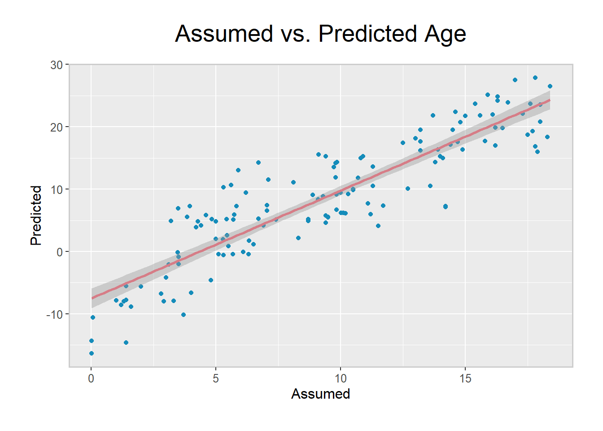

It can be useful to predict phenotypes in your data, either for comparison to assumed categories or to help impute missing values. Whole blood sample cell-type composition and sex predictors are already included in this package, and we are in the process of creating predictors for age and smoking status. Meanwhile, below are some current methods to predict these phenotypes in your data.
It is important to carry out predictions prior to probe masking, as many probes masked for analysis (e.g. those on sex chromosomes) are still useful for predicting phenotypes. Additionally, we advise imputing missing vaues before phenotype prediction, since many predictors use only a subset of available probes and missing data can seriously impact accuracy.
Using BIOS consortium data, which contains multiomics measures from 6 Dutch biobanks comprising ~4000 individuals, we trained a predictor for cell-type composition of whole blood samples. This was based on methylation values from 481,388 CpGs for 2,852 individuals and code for building the predictor can be found at the bottom of this page, should you wish to replicate the process in your own large dataset.
In order to use our predictor, you must first load in the coefficients. This predictor takes age, sex, and sentrix position as covariates, so it is important to create a wbcc_covar variable with this information to input into the predict_wbcc function.
data("DNAmPredictorCoef")
RGset$Sentrix_Position <- substr(RGset$Basename,23,28)
wbcc_covar <- as.data.frame(colData(RGset)[,c(28,32,36)])
head(wbcc_covar)## age sex Sentrix_Position
## GSM3092700_9985178096_R01C01 17.3 Female R01C01
## GSM3092701_9985178127_R03C02 11.3 Female R03C02
## GSM3092702_9986360109_R02C02 9.5 Male R02C02
## GSM3092703_9985178087_R01C01 15.0 Male R01C01
## GSM3092704_9985178090_R01C01 6.7 Male R01C01
## GSM3092705_9985178090_R04C01 8.3 Female R04C01As you can see, this information is available for us, but some changes are needed to ensure that each variable conforms to the predictor’s format. Covariates must be named with capital letters, so Age, Sex, and Sentrix_Position. Additionally, Sex needs to be coded numerically, with 0 signifying females and 1, males. Sentrix_Position also needs to be factorised and stored as a numeric variable.
wbcc_covar[,2] <- as.numeric(wbcc_covar[,2])-1
wbcc_covar[,3] <- as.numeric(as.factor(wbcc_covar[,3]))
wbcc_covar <- as.matrix(wbcc_covar)
head(wbcc_covar)## age sex Sentrix_Position
## GSM3092700_9985178096_R01C01 17.3 0 1
## GSM3092701_9985178127_R03C02 11.3 0 6
## GSM3092702_9986360109_R02C02 9.5 1 4
## GSM3092703_9985178087_R01C01 15.0 1 1
## GSM3092704_9985178090_R01C01 6.7 1 1
## GSM3092705_9985178090_R04C01 8.3 0 7After this reformatting wbcc_covar is ready to be input into the predict_wbcc function. Next, we turn our attention to the methylation values in our dataset. Since our predictor was trained using 481,388 CpG sites, we want to extract the methylation values for those sites from our data. In the predictor, the CpG rows are prefixed with data, making them simple to extract for matching purposes.
cgRows <- row.names(DNAmPredictorCoef)[grep("data", row.names(DNAmPredictorCoef))]
library(stringr)
cgRows <- str_remove(cgRows, "data")
wbcc_betas <- betas[match(cgRows, rownames(betas)),]
dim(wbcc_betas) ## [1] 481388 138dim(DNAmPredictorCoef) ## [1] 481392 5Looking at the dimensions of our wbcc_betas object in comparison with the DNAmPredictorCoef one, there are 4 missing rows in the beta value matrix. These represent the intercept along with the 3 covariates (Age, Sex, and Sentrix_Position). The last reformatting needed is to ensure that the rownames of the predictor and our dataset values match.
Next, we can use the predict_wbcc function to predict cell counts for our whole blood samples. This carries out matrix multiplication between our data and the predictor coefficients, trained on the large BIOS consortium data. Since 51 cell-type percentages were predicted to be outside the 0-100% range, we also apply a post-prediction trunction to the values for these rare cell types.
rownames(DNAmPredictorCoef) <- str_remove(rownames(DNAmPredictorCoef), "data")
rownames(DNAmPredictorCoef) <- str_remove(rownames(DNAmPredictorCoef), "covar")
predicted <- predict_wbcc(DNAmPredictorCoef, wbcc_betas, wbcc_covar, ncomp=40)## [1] "There are 89976 NA's in the data matrix. These will be median imputed."predicted[predicted<0] <- 0
head(predicted)## baso_perc eos_perc lymph_perc mono_perc
## GSM3092700_9985178096_R01C01 0.6321149 2.214421 32.94927 8.779214
## GSM3092701_9985178127_R03C02 0.3362108 2.507731 40.18787 10.787790
## GSM3092702_9986360109_R02C02 0.5406660 2.930009 47.58609 9.433068
## GSM3092703_9985178087_R01C01 0.3392097 2.334921 39.96977 8.882842
## GSM3092704_9985178090_R01C01 0.1161778 3.961629 45.82765 9.004402
## GSM3092705_9985178090_R04C01 0.0000000 1.238824 39.71982 7.191196
## neut_perc
## GSM3092700_9985178096_R01C01 54.88747
## GSM3092701_9985178127_R03C02 45.91311
## GSM3092702_9986360109_R02C02 38.98638
## GSM3092703_9985178087_R01C01 47.35677
## GSM3092704_9985178090_R01C01 40.29231
## GSM3092705_9985178090_R04C01 50.61751Here, you see the predicted cell types for our whole blood samples. There is an estimated percentage for basophils, eosinophils, lymphocytes, monocytes, and neutrophils. These can then be added to the colData of our RGset for use in later analysis models.
colData(RGset) <- cbind(colData(RGset),predicted)The DNAmArray package contains a getSex.DNAmArray() function, which predicts the sex of your observations by inspecting intensities of X-chromosome signals.
mid <- match(colnames(betas), targets$Basename)
predictedSex <- as.factor(getSex.DNAmArray(betas))
assumedSex <- targets$sex[mid]
xtabs(~predictedSex+assumedSex)## assumedSex
## predictedSex Female Male
## Female 55 0
## Male 0 83As you can see, this is complete data, but the predicted and assumed sexes are identical. This means that we can feel increased confidence that no incorrect labelling or mix-ups are present.
Age can be predicted using Horvath’s or Hannum’s coefficients with agep() from wateRmelon. If you use Hannum’s, you will need to call the coefficients using data(hannumCoef) before prediction. The predicted and assumed ages are then combined into a data frame that can be used to visualize the results.
library(wateRmelon)
data(hannumCoef)
predictedAge <- as.numeric(agep(betas, coeff=hannumCoef, method="hannum"))
assumedAge <- as.numeric(targets$age[mid])
ages <- data.frame(Assumed=assumedAge, Predicted=predictedAge)
head(ages)## Assumed Predicted
## 1 17.3 22.177837
## 2 11.3 10.441507
## 3 9.5 5.778678
## 4 15.0 21.759813
## 5 6.7 5.363251
## 6 8.3 2.099933ggplot(ages, aes(x=Assumed, y=Predicted)) + ggtitle("Assumed vs. Predicted Age") + th3 +
geom_point(shape=16, color="#158cba") + geom_smooth(method=lm, color="#D67D87")
The above graph shows that this prediction follows the general trend of the assumed ages, however the residuals are quite large. It may be possible to develop an improved predictor (Zhang et al. 2018), and we plan to implement this.
In order to build a cell-type composition predictor, you will need data on methylation status, cell-type composition, and relevant covariates for a large number of samples. In our case, we used data from the BIOS consortium, which is stored as a RangedSummarizedExperiment class object. We first extract the methylation values, ensuring we keep only CpG sites with complete data. In our case, this was all 481,388 assayed DNA methylation sites.
library(BBMRIomics)
data(methData_Betas_LLS_Freeze2_unrelated)
library(SummarizedExperiment)
wbccBetas <- assays(betas)$data
keepBetas <- apply(wbccBetas, 1, function(x) all(!is.na(x)))
wbccBetas <- wbccBetas[keepBetas, ]Next, we extracted measured cell percentages, which will be used as a known outcome to train the predictor. The cell-types measured may vary between datasets, but we chose to predict basophils, eosinophils, neutrophils, lymphocytes, and monocytes. It could also be a viable strategy to combine basophils, eosinophils, and neutrophils into one granulocyte category if you are lacking power to detect changes in rarer cell-types.
We also store relevant covariates, such as age, sex, and sentrix position, since these can confound associations between methylation and cell-type composition.
cellPercentages <- as.data.frame(colData(betas)[, c("baso_perc", "eos_perc",
"lymph_perc", "mono_perc", "neut_perc")])
cellPercentages <- apply(cellPercentages, 2, as.numeric)
covariates <- as.data.frame(colData(betas))[, c("sampling_age", "sex", "sentrix_position")]
colnames(covariates) <- c("Age", "Sex", "Sentrix_Position")
covariates[,3] <- as.integer(as.factor(covariates[,3]))
covariates[,2] <- as.integer(as.factor(covariates[,2]))-1
covariates <- apply(covariates, 2, as.numeric)After ensuring that IDs were consistent between all three types of data, we ensured that our training set was only composed of complete data. Missing values in either the outcome or the covariates would interfere with building the model.
rownames(covariates) <- rownames(cellPercentages) <- colnames(wbccBetas) <- colData(betas)$uuid
throwCellPer <- apply(cellPercentages, 1, function(x) any(is.na(x)))
throwCovar <- apply(covariates, 1, function(x) any(is.na(x)))
completeCellPer <- which(!throwCellPer & !throwCovar)
completeCellPer <- cellPercentages[completeCellPer,]
completeCovar <- covariates[rownames(completeCellPer),]
completeBetas <- wbccBetas[,rownames(completeCellPer)]Now that we have a complete data set, we want to split it into a training set and a test set. To do this we use the createDataPartition function from caret. This is superior to using sample, since it preserves the proportion of the categories in the outcome variable, which can be disturbed if you sample randomly.
It is important to set.seed when splitting your data, so that your models and results are replicable. In this instance, we chose to split the data 70:30, but assigning somewhere between 60% and 80% of your data to the training set is common and should work well.
library(caret)
set.seed(100)
trainRowNumbers <- createDataPartition(completeCellPer[,1], p=0.7, list=FALSE)
trainBetas <- completeBetas[, trainRowNumbers]
trainCovar <- completeCovar[trainRowNumbers, ]
trainCellPer <- completeCellPer[trainRowNumbers, ]
testBetas <- completeBetas[, -trainRowNumbers]
testCovar <- completeCovar[-trainRowNumbers, ]
testCellPer <- completeCellPer[-trainRowNumbers, ]Training the predicted can be done with the train_wbcc function including in this pipeline. This takes methylation values, covariates, and cell percentages as inputs and uses plsr from the pls package carry out multivariate regression using partial least squares. By default, the predictor is built using 50 components, but this can be modified using the ncomp option.
Using pls.options allows you to utilise multiple cores when building the predictor, and this is advised. You can determine the optimal number of components using the validationplot function and, when determined, save the coefficients of your model with coef. Sometimes, it is also useful to know which covariates have the highest prediction value and store them, as shown below.
library(pls)
pls.options(parallel = 10)
DNAmPredictor <- train_wbcc(trainBetas, trainCovar, trainCellPer, ncomp=50)
validationplot(DNAmPredictor, val.type="R2")
validationplot(DNAmPredictor, val.type = "RMSEP")
DNAmPredictorCoef <- coef(DNAmPredictor, ncomp = 40, intercept = TRUE)[, , 1]
W <- DNAmPredictor$loading.weights
ord <- order(abs(W[, 40]), decreasing = TRUE)
DNAmTop <- gsub("data|covariates", "", rownames(W)[ord[1:1000]])The data provided in this package is the DNAmPredictorCoef object stored above. This can be used to predict cell-type composition of whole blood samples as shown in the above sections, or you can use a predictor you build in a similar fashion.
In order to assess the power of your predictor, you should then predict cell percentages in your test set, and use our plot_wbcc function to examine the correlation between measured and predicted cell counts.
predicted <- predict_wbcc(DNAmPredictorCoef, testBetas, testCovar, ncomp=40)
measured <- testCellPer
plot_wbcc(measured, predicted)The above plots illustrate the relationship between measured cell counts in BIOS consortium data and predicted values in our test data. The correlation for neutrophils and lymphocytes is very strong, likely due to these being highly prevalent cell-types in whole blood samples. This agreement remains strong for eosinophils and monocytes, but is considerably weaker for the rarest cell type, basophils.
We chose not to cluster granulocytes as the prediction for eosinophils and monocytes was good, despite these being less prevalent, and there was still positive correlation for the basophils. Overall, these plots show that our predictor has the power to estimate cell types and performs well in unseen samples.
Zhang, Qian, Costanza L. Vallerga, Rosie M Walker, Tian Lin, Anjali K. Henders, Grant W. Montgomery, Ji He, et al. 2018. “Improved prediction of chronological age from DNA methylation limits it as a biomarker of ageing.” bioRxiv, October. Cold Spring Harbor Laboratory, 327890. doi:10.1101/327890.